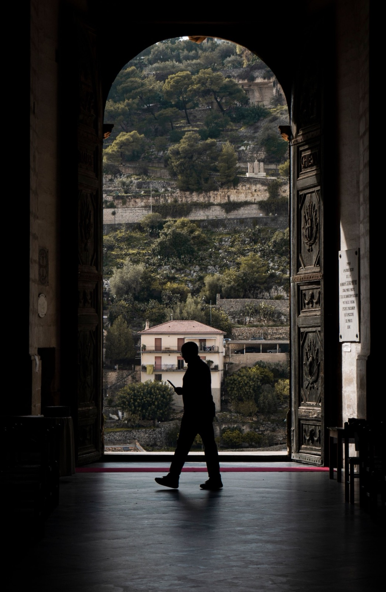

1. O segundo melhor dia é hoje DY7h11WBsxK2. Guardar também tem custo Da6VHtHIqKL3. A herança que cabe numa parcela Da7ogo9B5qk4. Existem dois caminhos para chegar DaBO61iBh-W5. Um não que tem prazo DaC4NlJpfqt6. Uma carta, muitos destinos DaDhcFjB_rD7. A parcela é a pior pergunta DaJbEFKhhQb8. Um time onde todos marcam DaKvMHuB7eD9. Sonho sem plano continua sonho DaQ5ayjBYmx10. A urgência é sempre mais cara DaQZW47h9UO11. Começar com bem, não com dívida DaSYcTwhQZE12. Bilhões em palpites Daa3FFLhDDQ13. A internet não assina o contrato DadXnvXBeVx14. Você financia todo mês sem saber Daf2JJNBo6F15. Trocar dívida cara por dívida planejada DaftFoGB3da16. O tempo passa de qualquer jeito Dal8i7EoKNE17. Disciplina que não depende de você DanCPiShQSg18. Aposentadoria não começa aos sessenta DayAO4II2JN19. O boleto atrasado custa o sorteio DayViFGoZrj20. Nem tudo que demora está atrasado Db30lCVBoIG21. Do carro à alavancagem Db9HlWWBvuS22. Pagar à vista nem sempre é o melhor DbBlrSSqqWu23. Existe mercado para a sua carta DbDW9iIBT7S24. Contemplar antes não custa juro DbJC4IfBBPm25. Vale a pena? Depende do que se compara DbLnr8ZhOH_26. Cem mil em quatro passos DbOaKaHh5XC27. Não promete dinheiro rápido DbQjdtjhFaR28. Nem toda carta vale o mesmo DbTjug5BBLl29. Cinco frases que afastam gente do plano Db_XU0Ch7iT30. A ferramenta não é o resultado DbcF9B3Bt6T31. Antes de comprar, olhe o mapa DbeW9nDB_Cw32. Esperar não é cruzar os braços DbzBwNmBwHr33. Existe uma janela para vender Dc-2Q9thZ2i34. Quem tem dinheiro também usa Dc3HzFiBauU35. Duas portas para o mesmo imóvel Dc8fKVJBiWz36. Duzentos e cinquenta por mês DcEPVWkh3kw37. Tem gente que investe em lembranças DcL4tXzBPbL38. Você vai querer um imóvel DcOfwa3hXL_39. Frases que custam anos DcPQVmZB8R640. Pagar em dia virou uma vantagem DcV2vmnhwOG41. Primeiro o dinheiro, depois o bem DcYriKZhiT242. A mesma casa, dois preços diferentes DccBvcRBrfG43. A parcela não decide o que você compra Dcd6MZeBuub44. O rendimento paga a parcela DceO1T5BtuK45. Ninguém junta tudo antes de começar DcgfD-ih6kL46. Ela tinha um imóvel e nada rendendo Dci2CVFB3n947. Alavancagem explicada devagar DclhwotBh1q48. Comprar de si mesmo DcoGiNhh5uD

49. Desistir não é perder tudo DcpLQHjBXpe50. Reformar sem entrar em financiamento DcqWyhDBd1Y51. Contemplado, mas com o nome sujo DcqyPvOBqL952. Quem paga a parcela é o inquilino DcrNrtih1c553. A herança que ainda não existe DctJPbVhv1954. Trocar o financiamento pela carta DctJSffBFF355. Um milhão cabe em três imóveis Dcv5xfxhTE656. Sem juro não significa sem custo DcwXNtmhkZW57. O imóvel da empresa pode virar caixa DdMJsNGByiq